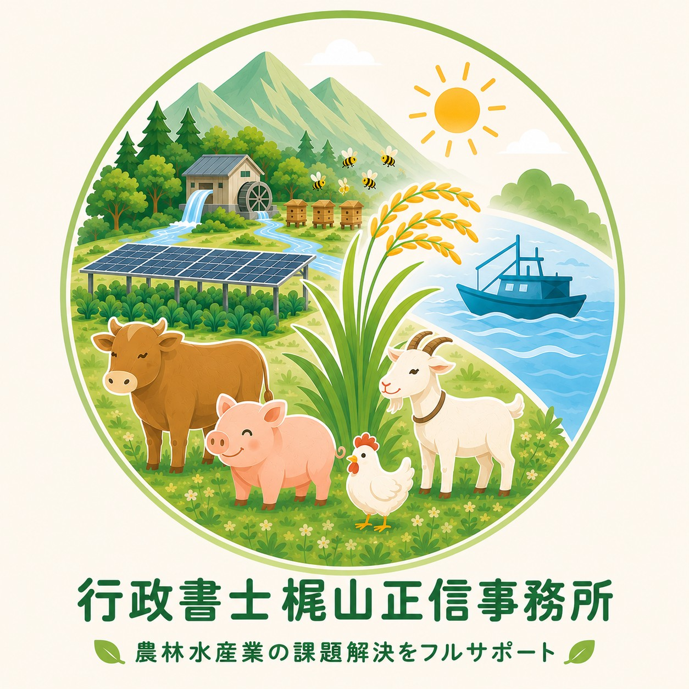
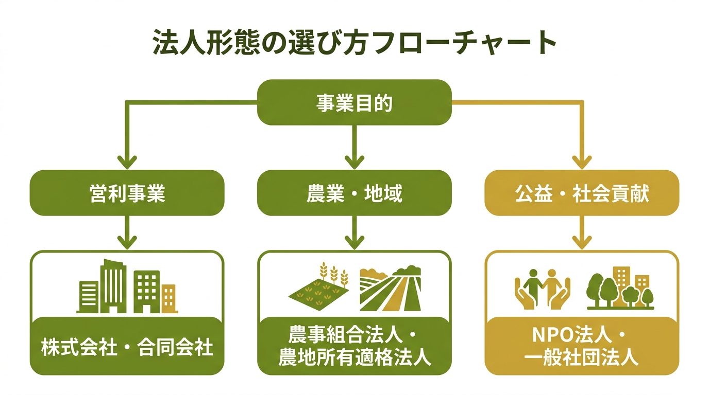
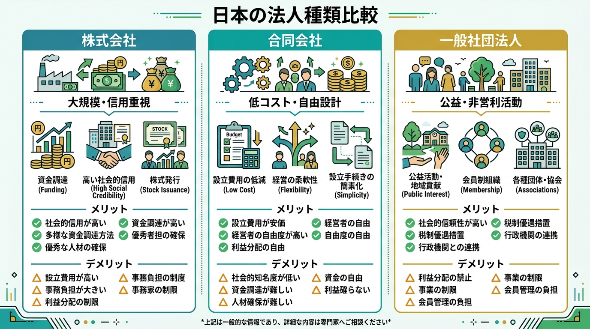
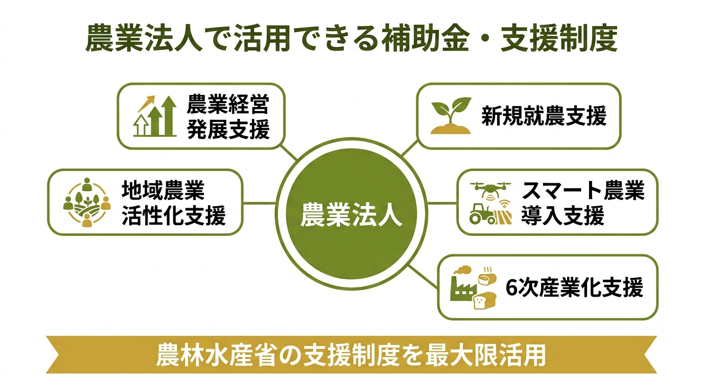
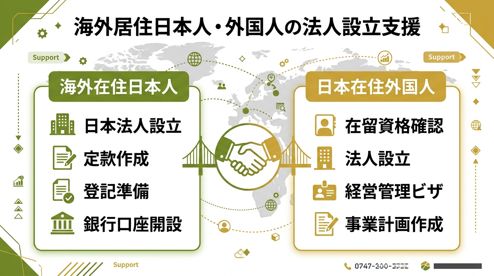
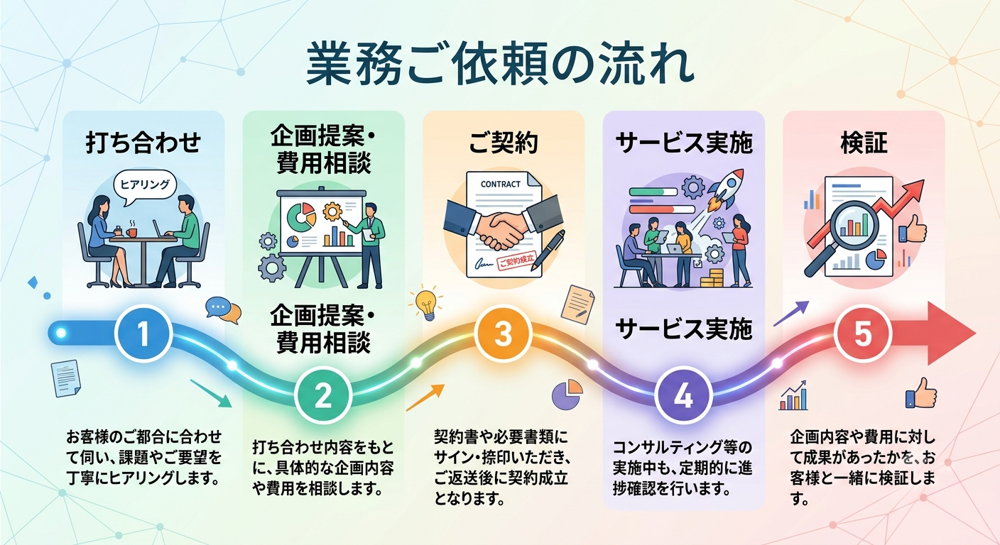

Mission
フードロスを価値へ転換
食品廃棄物を再生利活用し、農業・食品産業・地域経済の活性化につなげることを目指します。
法律・行政手続き支援、食品残さの再生利活用、農林水産業の経営改善、サーキュラーエコノミーからカーボンニュートラル、そしてネイチャーポジティブ推進まで、現場に寄り添う伴走支援を誠実に実施します。
現在の主な業務内容を掲載しています。

「読み込み中です。」
食品廃棄物を再生利活用し、農業・食品産業・地域経済の活性化につなげることを目指します。
農地転用、補助事業、法人設立、商標登録、外国人就労支援など幅広い行政書士業務に対応します。
農業分野におけるカーボンニュートラル、ネイチャーポジティブ実現へ向けた実践的な伴走支援を行います。
100%国産竹を再生した、環境に優しいカレンダー
竹林整備で伐採されても、現代社会においては使い道がなく処分に困っている国産竹100%を原料にした竹紙カレンダーです。竹紙は日本の環境保全と地域活性化に大きく貢献しています。
また、大判で美しいデザインカレンダーとして評価が高く、長年、国内外のカレンダーコンテストで毎年入賞を果たしています。
ご購入は、関係者リンクの一般社団法人たねまきからお願いします。
先週８日に、九州から近畿迄の梅雨明け宣言がされましたが、関東も同日から晴天でまとまった雨は降りそうにないので、必殺の遡りで関東も梅雨明け宣言となりそうな感じだと（笑）これから、本格的な夏になりますので、水田管理では多くの圃場で中干が行われているいうことで、この新HPの農事歴も田植えからAIに中干に更新をさせたところです。
このことから、この際この新HPのブラッシュアップとGoogleでのSEO対策をする目的で、メニュー内容を大幅に見直し、その統廃合をするとともに、新たに「＃法人設立」のコーナーを行政書士業務の中で、特に皆様に事前に知っていただきたい事項を満載して分かりやすく作成しましたので、法人設立に興味のある方はぜひ今熟読ください。
何事もそうですが、現代は「情報が石油だ！」と言われる時代です。勿論、AIもそうですけど、間違った情報があふれているから見ないとかではなく、間違った情報と正しい情報を峻別する情報リテラシー能力が必要な時代となっています。私は、今後も皆様に適時正しい情報を伝えるよう、この新HPを常に最新に更新していきますので、毎日でもチェックいただきますよう、よろしくお願いいたします。
７月も第二週目に入りましたので、本格的に暑くなってきました。ところで日本はまだましですが、今ワールドカップが行われている北米、そしてもっと酷い暑さなのがEUということで、エアコンのない中、気温40度越えなんか当たり前で、もう数千人が猛暑で亡くなってるというニュースが・・・
なんでこの暑さでエアコンがないのか？というのはEUの気候がこれまではそこまで気温が高くならない状況だったということですけど、もう地球の気温が以前の常識上では考えられないことになってますから、カーボンニュートラルがアメリカの離脱等で計画通りには進んでないことで、このような状況に陥ってるのかもしれません。
勿論、地球温暖化の要因はそれだけではないとは思いますけど、それでも気温が今後も上昇することは避けられない状況ですから、一番その影響を受ける自然環境、そしてその中で営まれる農業はその影響をもろに受けますので、そのことに対するイノベーションがなければ、壊滅的な影響を受けるのは火を見るよりも明らかです！ですので、慣行農業対有機農業とか、そしてセイヨウミツバチ対ニホンミツバチみたいな、ミクロな「自己中心主義」で物事を見るのではなく、地球規模で物事を見る、そして農業全体を考える必要があると強く感じています。
本日から７月、そう個人事業主の方は、昨日で今期の前半が終わりましたので、いよいよ後半に入ります。ただ、何事もですが、今の時点で前半の上期の決算を算出して、後半の財務戦略を見直す絶好のタイミングになります。勿論、私も毎月の決算はやっていますが、１年を分ければ上期が昨日で終わったことになりますから、帳簿上の各経費の支出や、収入をこの時に細かく確認して、12月の最終決算に備えてこれから下期の事業に取り組んでいく必要がるということですね！
ところで話題は変わりますが、私もこのような日々の会計自体は、市販の会計ソフトでやっていますが、最近のAIの進歩で、AIエージェントに日々の入力自体はさせて、それを私が最終確認をするようにしています。勿論、その他のこのようなHPの改善や日々の業務連絡への日常業務は、管理の為のダッシュボードをバイブコーディングでAIで作成した上で、それを日々管理する中で迅速にクライアントからの連絡に即時対応ができるようにしています。
勿論、AIエージェントが行った作業の最終確認は私がするようにしていますので、外に出す情報は私が事前に全てチェックしていますが、その前に誤字脱字などを含めた基本的なことは、全てAIが私が寝てる間に作業をやってくれる業務システムを組んでいるところです。既にAIで検索や毎回の適切なプロンプトで業務の効率化を図る時代は終わりましたので、私も更に業務スピードを上げてAIエージェントの構築に取り組むことで、皆様のご期待に添える成果を出すことを目指してまいります。
【今月の１冊】
６月も終わろうとしていますが、皆様、いかがお過ごしでしょうか？全国の殆どの稲作農家の方は、乾田直播を含めて最初のいわゆる田植えが終わったころだと思います。今、台風がダブルで日本に向かってきていますが、このような天災を含め、これからは雑草や水管理という稲作の宿命との戦いになるシーズンインの時期だと思います。
話を変えて本題に入りますが、前回、特定行政書士のコラムを初めて揚げましたが、今回も私が経営大学院に行っていた関係で、この本は読んだ本が良いという本を月に１～２冊程度紹介をしていきたいと思います。記念すべき第１回目は、現在慶応義塾大学経済学部の琴坂教授の「経営戦略の進化（理論編）」の紹介というか、お薦めしたいと思います。なぜ、この本を薦めるかと言えば、私が経営学がこんなに面白い学問なのか？と思ったのが、その時は立命館大学経済学部准教授だったこの琴坂教授の「領域を超える経営学」の本を読んだからなのです。
今後も、このような自分の人生を変えるような切っ掛けの１冊を紹介していきますので、農業経営者の中でも経営に関する本を読まれる方は気に留めていただければありがたいです。私も経営大学院に通っていた時は月に10冊程度、年間100冊以上の経営学に関する本や論文を読んでましたが、卒業した現在は、AIや農家の節税に関する実務のYouTubeを拝聴する時間に傾倒しがちですので、少なくとも経営学上で着目される本や論文には、これからも目を通していきたいと思います。
農業の相続は、一般的な相続と異なり、農地という特殊な財産が絡むため非常に複雑です。農地は「農地法」という法律で厳しく管理されており、相続によって農地を取得した場合でも、農業委員会への届出が必要になります。また、後継者がいない場合の農地の売却や転用についても、行政への許可申請が別途必要となり、手続きを誤ると後から大きなトラブルになることがあります。さらに、相続税の申告と農地の評価額の問題も絡み合い、農業に深い知見がある専門家なしでは対応が困難なケースがほとんどです。
例えば、ご高齢の親御様が亡くなり、千葉ニュータウン地域に農地を残された場合、その農地を相続した方が農業を継がない場合は、農地転用の許可を取った上で売却・活用する手続きが必要です。しかし、届出をせずに放置してしまうと、農地が「耕作放棄地」となり、行政指導の対象になるリスクがあります。
農業の相続は、時間的な期限もあるため、「とりあえず早めの相談」が最善の一手です。私、特定行政書士である行政書士梶山正信事務所では、地元・白井市を拠点に農地の相続での転用申請のような具体的なことから、日頃の農協等からの資材購入や農作物の販売での困りごとのようなことまで、無料で迅速にお伺いしてご相談をお伺いします。まずはお気軽にご連絡ください。
皆様、最近の生成AI、今年に入ってからのいわゆるChatGPTやGeminiなどのクラウドAIの進歩が目覚ましく、あまりに性能が凄すぎて、人のプログラミングの弱点を突くクロードミュトスなどのAIが使用禁止にはなっていますが、今後も益々このAIが進歩し、今後の人の生活自体を大きく変えていくと考えられます。
勿論、私もそのことを利用してこの５月から、こちらの新HPをAIにプログラミングさせた上で、適宜更新していますが、私の誤字脱字はAIが気を利かせて事前にチェックしているようですので、その内にAIが「面白い農業ネタが昨夜見つかりましたから、それを纏めてコラムに投稿しておきました！」みたいなことになるんだとは思います（笑）
つまり、このような皆様との重要なコミュニケーションツールも、だんだん人の関与、つまり相手に対する意識の伝達がAIによってなくなってくることが考えられますから、私はメールも含めて最後の投稿文は自らの意志で書き続けるつもりです！そのことで、問い合わせに対する返信は、スピードも含めてそれが相手に対する誠意だと考えていますので、真摯に内容を読ませていただき、迅速に回答をさせていただきますので、よろしくお願いいたします。
私はこの千葉ニュータウン地域に住んで約30年になり、白井市にも20年以上住んでいることとなります。
既に、生まれ育った福岡県より長く住んでいますので、ある意味、ここが故郷であり、安住の地だと考えているところです。
この白井市の良いところは、農業を始めとした自然に恵まれていることも私の今の業務とシナジーしますが、そもそも日本は地震国であり、東日本大震災を始めとして毎日のように地震がありますが、ここは非常に固い地盤の北総台地の上にあり、その為に多くのデータセンターも所在していることからも、地震に強い地域だということから防災も考えてこちらに長く住居を構え、これからも住んで行きたいと考えています。
ですから、この安住の地である白井市、そして千葉ニュータウンの自然環境を守り、住民の皆様の安全・安心を行政と連携しながら、特定行政書士として、住民の皆様と一緒にその役目を果たしていきたいと考えています。
では、今後もこの白井市を住みよい街にするために、皆様のご期待に添えるよう全力を尽くしてまいります。
私は、この「一般社団法人フードロスゼロシステムズ」の代表理事、また「行政書士梶山正信事務所」の代表をしています、特定行政書士の梶山正信と申します。
全国各地では、現在、稲作における田植えが行われている季節となっていますが、農業においてもその平均年齢の高齢化で離農する農家が増加し、日本で言えば滋賀県の面積の耕作放棄地が発生しています。このため、多くの水田でまだ田植えができていないところが多くあるやに聞いていますが、皆様の近くの水田の田植えは順調に進んでいますでしょうか？
また、中山間地の水田では、既に長期間の耕作放棄により、水田の灌漑機能自体が崩壊し、既に水田としての機能を失ってしまっている地域もあるようです。このため、今後は今までのようには水を使わない稲作である、節水型の乾田直播という技術や、その他にも多くの新たな作付け技術の開発により、農業においてもこのマイコス米日記のページにあるような革新的なイノベーションが進みつつあります。
私は、そのことに取り組む先進的な農業経営者、そしてそんなイノベーターの経営戦略をサポートし、持続性のある再生可能な日本の農業の発展を目指しています。どうぞ、今後は定期的にこの”気になる農業ブログ”を更新していきますので、お読みいただけますようよろしくお願いいたします。
信頼・真摯・誠実の3Sを基本とし、フードロス削減と地域の持続可能な発展を両立することを目指すページです。
地域の個々の分野だけでは解決できなかった課題に対し、多くのフードロスを防ぐことで新たな価値を創出し、農業・食品産業・環境・地域経済に貢献します。
生産サイドを含めた全てのフードロスを新たなバリューチェーンでつなぎ、廃棄せざるを得ない資源に価値を与え、日本でのフードロスゼロと脱炭素社会を目指します。
地域資源の有効活用を支援するプラットフォームを構築し、生産者や食品関連企業のSDGs・環境への想いに伴走しながら、地域に必要とされる事業を育てます。
国内では年間約600万トンの食品廃棄物が「ごみ」として処理されている現状があり、これを有用な「資源」へ変えることで、サステナブルなエコシステムへの転換を目指しています。
また、2050年のカーボンニュートラル達成に向けて、国や自治体が進める地域脱炭素化にも全力で貢献します。
福岡県みやま市山川町出身。福岡・熊本を中心に農政の現場に関わり、関東でも千葉県内をはじめ各地の農政現場に携わってきたのち、2021年12月に農林水産省を早期退職し、2022年3月から行政書士として起業。
農林水産省で20年以上取り組んだエコフィード化の知見や、全国自治体とのコネクションを活かし、一般社団法人フードロスゼロシステムズを設立。2021年にはグロービス経営大学院をMBAで卒業し、2023年5月からは早稲田大学招聘研究員としても活動しています。
特定行政書士として、農林水産業のカーボンニュートラル等、経営改善、財務・管理会計、マーケティング戦略構築などを支援しています。
| 社名 | 一般社団法人フードロスゼロシステムズ 【行政書士梶山正信事務所】 |
|---|---|
| 代表者 | 特定行政書士：梶山 正信 |
| 所在地 | 千葉県白井市笹塚2丁目5番 プリスタレジデンスⅠー1412 |
| 連絡先 | 047-497-1796（FAX兼） |
| 社員数 | 2名 |
| 事業内容 | 農林水産業におけるカーボンニュートラル、食品残さの再生利活用、経営コンサルティング等 |
是非、白井市の農地転用・農業法人設立なら、先ずは｜特定行政書士の「行政書士梶山正信事務所」で！
まずは無料で、あなたのご依頼をお聞きします！
私は、まずこの地元の皆様からのご依頼を最優先していますので、お問い合わせフォームからご連絡をいただきましたら、私の方から地元の皆様のご指定の場所に即座にお伺いして、「無料」でじっくりお話をお伺いします！
法人だけでなく個人事業主の確定申告等の税金や相続のお悩みも、お気軽にお問い合わせください。それが、今の地元の皆様への特定行政書士としてのお約束になります。
これまでの取組の実績として、千葉ニュータウン地域の農業やフードロスの課題解決に奔走してまいりました。印西地域の廃棄物の処理計画策定や、次期焼却施設計画を策定する委員会の委員として参画したほか、現在も白井市の環境審議会、廃棄物減量等審議会、ふるさと産品認定審査会等の委員を受任し活動しております。今後は家庭から出る廃棄物の抜本的削減とリサイクルを目指し、行政と強力に連携して取り組んでいくことで、地元の行政機関との強いコネクションを築いております。
この千葉ニュータウンは、北総台地の強力な地盤と豊富な電力、自然に恵まれた農業が盛んな地域です。Googleを始めとしたデータセンターの建設が相次ぐ一方で、美味しい農産物を生産し続けるためには適切な農地転用や生産緑地の維持など、農地の維持管理に関する課題が山積しています。
だからこそ、地域の自治体と直接的なパイプを持つ行政書士が必要です。地元の農業経営者の皆様に最大のメリットをもたらすべく、単なる行政手続きにとどまらず、積極的な補助金申請から政策の陳情まで含め、適切かつ迅速な手続きを特定行政書士として全力でサポートいたします。
そして、最後に今の激動する国際情勢から、この日本においてもガソリンや電気代等のエネルギー関係だけでなく、身の回りの小物や各種の日用品等も値上がりしていますが、今後もそれは続いて行くことが予測されています。現在、政府による食品消費税の減税の検討が行われていますが、既に所得税や住民税、また社会保険料の見直しが行われ、その強化がされています。
この千葉ニュータウン地域にお住いの皆様におかれましても、これらの制度改正などにより身の回りでの困りごとが益々増えてくると考えられますので、私は地元の行政と連携しながら、事前に皆様のその不安を少しでも解消することに日々努めているところですので、安心して何でもご相談ください！
農林水産業の現場に寄り添い、行政手続きだけでなく、経営改善や環境対応など、実質的な課題解決に向けた伴走支援を行います。
※勿論、この千葉ニュータウン地域、そして白井市のエリアだけでなく、農林水産業に関することでしたら、全国からのご相談に対応可能です。
私たちは単なる書類作成にとどまらず、農林水産業の現場が抱える真の課題に向き合います。
※難易度や案件内容によって変動するため、必ず事前にお見積りを案内します。
※申請実費は事前納入となります。在留資格等で困難な案件も事前手数料の納入をお願いしております。
元HPの実績年表を読みやすいタイムラインとしています。

現在、多くの方が「法人を作れば信用が上がる」とお考えになります。しかし実際には、どの法人形態を選ぶかによって、事業の成功に必要な要素が大きく変わります。
だからこそ、行政書士による事前相談と設立後の法人運営サポートが重要になります。

▲ 事業目的に応じた法人形態の選び方イメージ

▲ 各法人形態のメリット・デメリット比較イメージ
農業法人は一般的な法人設立とは異なり、農地法や農業委員会との手続きなど、専門的な知識が必要です。
特徴：農業者が共同して農業経営を行うための法人制度。農業協同組合法に基づく。
✅ メリット
⚠️ 注意点
特徴：農地を所有して農業経営を行うことができる法人。農地法の厳格な要件を満たす必要がある。
✅ メリット
⚠️ 注意点
⚡ 農業法人の設立には専門知識が不可欠です
農地法・農業委員会・農林水産省の制度に精通した行政書士が、設立から運営まで一貫してサポートいたします。
一般的な法人設立ページとはここが大きく違います！

▲ 農林水産省の支援制度を最大限活用するイメージ
農業経営発展支援
経営規模の拡大や法人化を目指す農業者への経営発展を総合的に支援
新規就農支援
新たに農業を始める方への研修・資金・定着支援
スマート農業導入支援
ICT・IoT・AI等を活用した先端技術導入への補助
6次産業化支援
生産・加工・販売を一体化し、農業の付加価値を高める取り組みへの支援
地域農業活性化支援
地域全体の農業基盤強化と持続可能な農業地域づくりへの支援
🔑 農林水産省出身の行政書士だからできること
補助制度は年度ごとに内容が変わります。
農林水産省で実際に政策立案に携わった経験を持つ行政書士が、
最新の制度情報に基づいて、貴方の事業に最適な補助金を提案します。
※補助制度の詳細内容は、今後随時更新してまいります。
⚠️ くれぐれも、重ねてお伝えしますが——
法人を設立する目的は、単に組織的経営の為に法人格を取得することではありません。
適切な法人形態を選択することで、国や自治体と連携しながら支援制度を適時・適確に活用し、
そのことで、事業を成長させる可能性が大いに広がります。
海外在住者・外国人の日本法人設立もサポートします

▲ 海外在住者・外国人向け法人設立支援の全体像
🚨 最も注意すべきポイント
海外との手続きや外国人関係の法人設立では、日本国内の制度だけでなく、国際的な手続き経験が必要です。だからこそ、法人設立前の相談が非常に重要です。
⚠️ よくあるケース
設立前に事業目的・将来計画・資金調達方法を確認することで、最適な法人形態を選択できます。
元のHPを、閲覧しやすく再構成しています。

元HPの記事から主要トピックと写真をまとめて、見られるようにしました。
2025年7月10日に、山本さんのマイコス米の現場視察が行われ、現地で意見交換があったことを掲載しています。収穫期の９月にもお二人で山本さんのマイコス米の圃場の現場を再視察をされました。
なお、荒井前衆議院議員は、来年春の札幌市長選に出馬を表明されています。

元のHPに現場圃場での集合写真として掲載されていたものです。

2024年5月14日付の特許庁からの商標登録証の写真です。

現地で取り組みを進める経営者として、多くの記事で紹介されています。

今最先端の不耕起栽培技術も取り入れた、マイコス米の昨年の圃場の写真です。

昨年は今までで最大の収穫量であり、山本さん曰く豊作とのことでしたが、今年は北海道も更に気温がタックなってますので、それを考慮しながら、更にマイコス米の作付け技術の向上に努められています。

北海道ならではの効率的な収穫体制と、今後の面積拡大も見据えた的確な経営判断をされていますので、拡大路線一辺倒ではなく、経営として最大の効率性と収益性を考えた経営に、今後も取り組んでいくとのことです。
〒270-1426 千葉県白井市笹塚2-5-1-1412
一般社団法人フードロスゼロシステムズ【行政書士梶山正信事務所】
元HPの問い合わせ案内を、読みやすく改善しています。
NEWホームページをご覧いただきありがとうございます。お急ぎの場合は、個人連絡先 070-4093-9561 までご連絡ください。
行政書士関係のご依頼は、相談内容の概要をフォームへ事前送信をお願いします。通常、数日以内に返信いたします。
返信がない場合は、047-497-1796（FAX兼）へ連絡をお願いします。